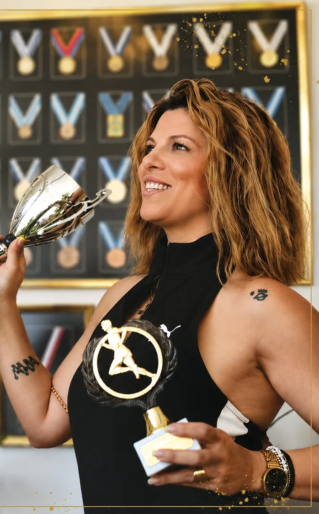

ΤΟΝΙΑ ΜΑΝΩΛΑΚΑΚΗ · PILATES INSTRUCTOR
Η διαδρομή μου
έγινε η φιλοσοφία
μου.
Από τον αθλητισμό στο Pilates.
Από την εμπειρία στη γνώση.
Από μικρή, ο αθλητισμός ήταν κομμάτι της ζωής μου. Μέσα από αγωνίες, διακρίσεις, προκλήσεις και τραυματισμούς, έμαθα τη δύναμη της προσπάθειας, την αξία της πειθαρχίας και τη σημασία της σωστής καθοδήγησης.
Όλα αυτά τα χρόνια, η κίνηση ήταν και παραμένει ο τρόπος μου να εκφράζομαι, να εξελίσσομαι και να εμπνέω τους ανθρώπους γύρω μου.

Το χθες με έμαθε.
Το σήμερα με εκφράζει.
Το αύριο με εμπνέει.
ΣΠΟΥΔΕΣ & ΕΞΕΙΔΙΚΕΥΣΗ
Η εμπειρία έχει
βάση τη γνώση.
Είμαι η Τόνια Μανωλακάκη, καθηγήτρια Φυσικής Αγωγής και Pilates instructor. Η εκπαίδευσή μου είναι η αφετηρία για την προσωπική φροντίδα που δίνω σε κάθε μάθημα.
Γνώρισε τις υπηρεσίες μας- Τ.Ε.Φ.Α.Α. Αθηνών
- Απόφοιτος του Τμήματος Επιστήμης Φυσικής Αγωγής και Αθλητισμού Αθηνών.
- MSc στην άσκηση σε ειδικούς πληθυσμούς
- Μεταπτυχιακές σπουδές με αντικείμενο την άσκηση σε εγκύους, ηλικιωμένους, ανθρώπους με χρόνιες παθήσεις και μυοσκελετικές ιδιαιτερότητες.
- Διετής συνεργασία με το Τ.Ε.Φ.Α.Α.
- Συνεργάτιδα του εργαστηρίου μεταπτυχιακών σπουδών του φυσικοθεραπευτηρίου Τ.Ε.Φ.Α.Α. Αθηνών για δύο χρόνια.
- Διετής πρακτική εκπαίδευση στο Pilates
- Πρακτική εκπαίδευση σε studio Pilates στην Αθήνα για δύο χρόνια, με έμφαση στην εφαρμογή της μεθόδου.
- Συνεχής επιμόρφωση
- Ενεργή συμμετοχή σε σχετικά συνέδρια, με τη γνώση να εξελίσσεται μαζί με την καθημερινή εμπειρία της διδασκαλίας.
Η ΔΙΚΗ ΜΟΥ ΠΡΟΣΕΓΓΙΣΗ
Πρώτα ο άνθρωπος.
Μετά η άσκηση.
Παρατηρώ. Διορθώνω.
Προσαρμόζω. Καθοδηγώ.
Η γνώση αποκτά αξία όταν γίνεται πράξη. Κάθε σώμα είναι διαφορετικό και κάθε πρόγραμμα πρέπει να είναι εξατομικευμένο.
Από το 2009, προσεγγίζουμε κάθε μαθητή ξεχωριστά. Αυτό που μας ενδιαφέρει είναι να κατανοήσουμε τις ανάγκες και τους στόχους του και να χτίσουμε πάνω σε αυτούς τη δική του προπόνηση.
Στον χώρο μας μαθαίνουμε πρώτα να εκτελούμε σωστά κάθε άσκηση. Δίνουμε έμφαση στην αναπνοή, στην ακρίβεια και στον έλεγχο, ώστε η κίνηση να έχει ποιότητα και ουσία.
PILATES BY TONIA
Η δική σου διαδρομή
ξεκινά με μια γνωριμία.
Έλα να γνωρίσεις το studio και να συζητήσουμε από κοντά κάθε σου απορία.
Μαζί, θα χτίσουμε ένα πρόγραμμα πάνω στις δικές σου ανάγκες.